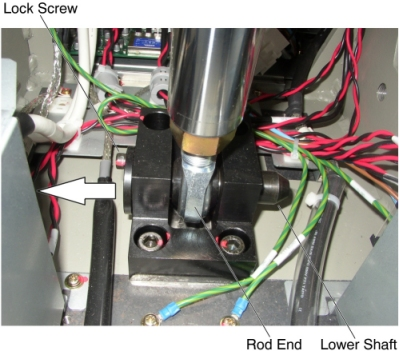
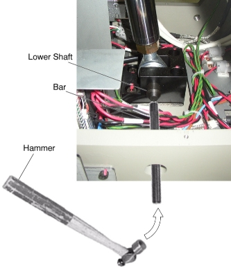
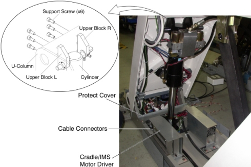
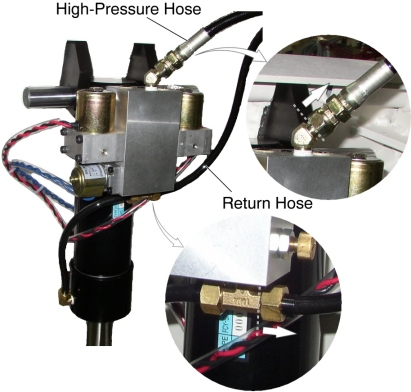
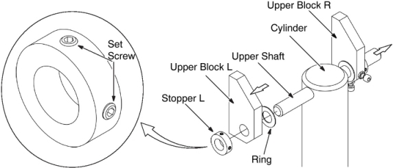
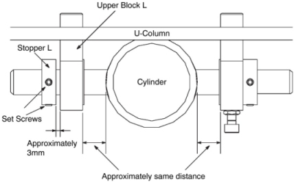

Operating Documentation
Direction 5307452-8EN, Rev# 4
Discovery CT750 HD Service Methods - Adv
Operating Documentation |
| Required Persons | Preliminary Reqs | Procedure | Finalization |
|---|---|---|---|
| 1 |
| Last Revised: | 25 June 2008 |
| Item | Qty | Effectivity | Part# | Manufacturer | |
|---|---|---|---|---|---|
| Table Support Tool | 1 | - | 5138908 | - | |
| Oil-Pan (2 liters) | 1 | - | - | - | |
| Item | Qty | Effectivity | Part# | Manufacturer |
|---|---|---|---|---|
| Oil | 1 | - | Z9807QD | - |
| Item | Qty | Effectivity | Part# | Manufacturer | |
|---|---|---|---|---|---|
| Hydraulic Cylinder | 1 | - | 5127282 | - | |
| CRASH HAZARD! | |
| THE TABLE MUST BE SUPPORTED USING THE SUPPORT TOOL AS DESCRIBED BELOW WHEN CHANGING THE HYDRAULIC CYLINDER. | |
Raise the Table to maximum height.
Move the Cradle and IMS to OUT limit position.
Remove power from Table by turning off 120VAC, Axial Drive and HVDC switches on Service Switch Panel.
Remove the following Table covers:
IMS Rear Cover
IMS Side Cover (Right/Left)
Front/Rear Side Plate (Right/Left)
Front/Rear Leg Plate (Right/Left)
Base Cover (Right/Left)
Front Base Cover
Illustration 1: Table Covers

Remove the Pump Upper Cover as follows:
Mark the position of pump upper cover on both sides for re-installation.
Disconnect the cable connectors of the tape switches and touch sensors.
Remove six (6) screws holding the both sides of the pump upper cover, and remove the pump upper cover.
Illustration 2: Pump Upper Cover Removal

Attach the Table Support Tool as follows:
Perform this step if applicable:
(For GT1700 and GT2000 Table) Skip this step.
(For Global PET/CT Table) Release Transporter and manually push up against the rear Hard Stop.
Illustration 3: Table Pushed Against Hard Stop (Global PET/CT Table)

| CRASH HAZARD! | |
| THE TABLE IS VERY HEAVY AND CAN MOVE IF THE GLOBAL PET/CT TABLE TRANSPORTER IS NOT SECURED! | |
| The transporter must be secured from moving before attaching the table support tool. |
Perform this step if applicable:
(For GT1700 and GT2000 Table) Skip this step.
(For Global PET/CT Table) Attach one of the “L” shaped alignment blocks to the front linear rail (The alignment blocks and hardware came with the Table and should have been stored away during install). Tighten bolt as shown in order to secure the Transporter.
Illustration 4: Tighten Alignment Block (Global PET/CT Table)

The adjuster of the support tool A should be partially extended, about 3 cm, before supporting the Table.
Illustration 5: Table Support Tool

Attach the support tool A to the left top frame, and turn the set (hexagon) screw to CCW to fix the support tool A.
Illustration 6: Support Tool 'A' Attachment

Attach the other support tool A to the right top frame, and turn the set (hexagon) screw to CCW to fix the support tool A.
Attach the support tool B to the support tool A using 4 screws.
Power up the Table from the Service Switch Panel.
Extend the adjusters by turning them so that the adjusters touch the floor, and lower the Table onto the support.
Illustration 7: Table Support Tool Attachment (GT1700 and GT2000 Table)

Illustration 8: Table Support Tool Attachment (Global PET/CT Table)

Remove power from Table by turning off 120VAC, Axial Drive and HVDC switches on Service Switch Panel.
Remove the protect cover by unscrewing 2 screws.
Disconnect the cable connectors from the Cradle/IMS Motor Driver.
Cut any tie-wraps holding the valve cables and hoses to the Table frame.
Disconnect the valve cable connector.
Remove the lower shaft as follows:
Unscrew a lock screw.
Draw out the lower shaft from the rod end.
Illustration 9: Lower Shaft Removal

| NOTE: | If the lower shaft is hard to draw out, hammer the opposite side of the lower shaft. |
Illustration 10: Lower Shaft Removal with Hammer

Disengage the upper block R and upper block L from the U-column by unscrewing 6 support bolts.
Illustration 11: Upper Blocks Removal

Remove the Cylinder with hoses from the Table, and put it to the oil-pan.
Disconnect the high-pressure hose from the cylinder (a oil may spill out from the hose), and connect it to the new cylinder.
Disconnect the return hose from the cylinder (a oil may spill out from the hose), and connect it to the new cylinder.
Illustration 12: High-Pressure Hose and Return Hose

Remove the upper shaft from the cylinder as follows:
Loosen 2 set screws on the stopper L, and remove the stopper L, upper block L and a ring from the upper shaft.
Draw out the upper shaft with the upper block R from the cylinder.
Illustration 13: Upper Shaft Removal

Install the upper shaft to the new cylinder as follows:
Insert the upper shaft (w/ stopper R, upper block R and the ring) cross the hole of the new cylinder.
Position the ring (yellow side to the upper block L), upper block L and stopper L on the shaft, and temporarily secure the stopper L with a set screw on it.
Position the rod end of the new cylinder into place, and insert the lower shaft, then tighten the lock screw.
Connect the valve cable connectors.
Align the screw holes of the upper blocks and U-Column as follows:
Power up the Table from the Service Switch Panel.
Adjust the length of the cylinder using Table Up/Down switch.
| NOTE: | If the cylinder is retracted, push the cylinder down pressing the Table down switch. |
Engage the upper blocks to the U-Column using the 6 bolts (Torque: 55N.m).
Verify that the position of the stopper L and cylinder are the following, and tighten the set screws on the stopper L (Torque: 5N.m).
Illustration 14: Position of the Stopper L

Raise the Table to its highest position, and verify that the upper blocks are securely installed.
| NOTE: | If the Table can not be raised to the highest position due to a lack of oil, pour oil into the pump (refer to Step 27). |
Carefully remove the Table support tool.
Verify that all cabling and hosing are in the proper configuration and will not catch, then tie-wrap the cables and hoses in place.
Table pump lubrication:
Pry a lid up using a flat-head screw driver.
Illustration 15: Lid of Pump

Pour approximately 100cc of the oil into the pump.
Power up the Table from the Gantry Service Switch.
Raise the Table as high as possible.
Turn off the Table from the Gantry Service Switch.
Check the level of the oil by using a stick such as tie-wrap, specification is shown in illustration below.
Illustration 16: Check Oil Level

Secure any loose hoses with tie-wraps.
Raise and lower the Table repeatedly to verify that the hoses do not catch or pull excessively.
Turn off all 3 switches (Axial Drive, HVDC, 120VAC), and re-install the Table covers.